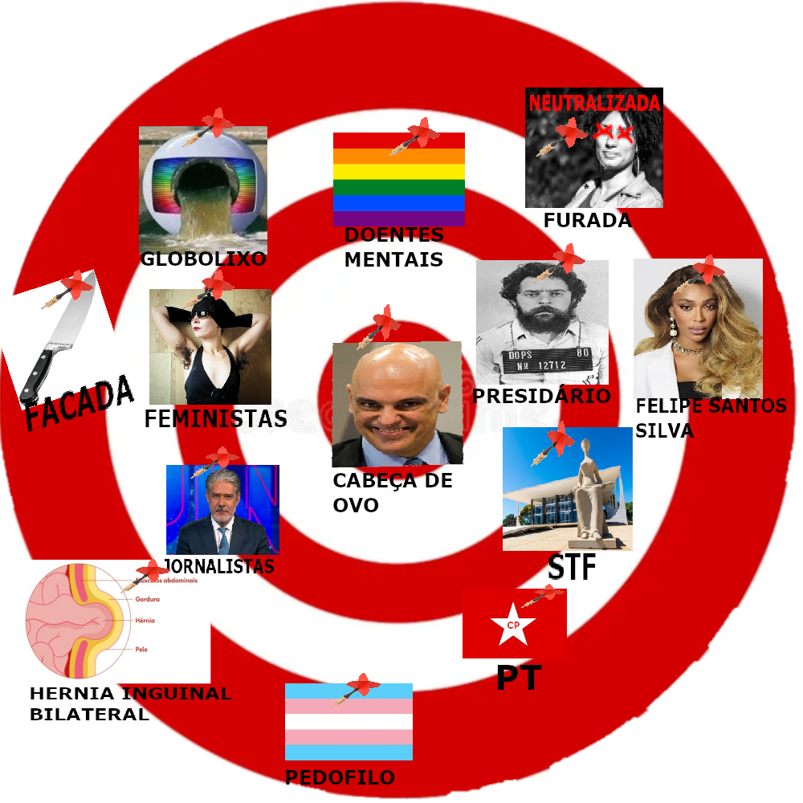

MANIFESTO PATRIOTA
Atenção boiolas, venho por meio desse texto dizer que esse site foi feito em homenagem ao criador do mesmo ter chegado a meta de mil seguidores, com muito orgulho eu apresento a vocês o maravilhoso SITE DO MITO (ou para os intimos) O SITE PATRIOTA.

-após ler meu Face, Eu fiz esse site para mostrar não só o meu amor mais sim o amor de varios usuarios que assim como eu ama jair messias bolsonaro, o intuito desse site é ser uma satíra (OUVIU ESQUERDA? ESTOU FAZENDO UMA SATÍRA POLÍTICA E VOCÊS PODEM FAZER NADA CONTRA, CHUPA PETISTAS) e além do mais eu conversei com meu advogado e ele disse para deixar claro que eu não tenho odio alguma esquerda. tenho odio apenas de Petistas,Feministas,Gordas,Favelados,Nordestinos,Paraenses,Viados,Travecos e toda a comunidade LGBT incluindo os pedófilos.
como a média brasileira de qi é 83 então agora darei uma breve explicação de como fuciona cada página do site. essa e a homepage, a página prinicpal com o ALVO DOS INIMIGOS DA PÁTRIA. Ao lado temos a página do BOLSONARO HIPOTÉTICO que seria uma visão dos esquerdistas em geral tem do bolsonaro. seguindo temos A ROLETA CONSERVADORA que toda vez que você entra na página ou aperta em "rodar roleta" ele vai gerar uma imagem, video ou gif aleatório sobre o bolsonaro ou algum meme patríotico. depois temos POEMAS PARA O CAPITÃO, você temm o direito de fazer uma cartinha para o capitão e quando terminar ela estará lá para que todos os patriotas possam ver. o penultimo é o RADAR PATRIOTA, onde é possivel ver toda notícia sobre manifestações do bolsonaro (ou qualquer notícia que tenha bolsonaro + manifestação). a ultima pagína fala SOBRE o desevolvimento do site, cretidos, PIX PATRIOTA etc, se quiser ajudar a pagína acesse lá.

Queria deixar registrado aqui que sim, SOU PATRIOTA e sim, NÓS DAR O CU PRO BOLSONARO, CHORA MAIS PT precisa dizer mais alguma coisa? Só não vê quem não quer.
_-=CARTA ABERTA PARA JAIR MESSIAS BOLSONARO=-_
Capitão estive muito preocupado com seu quadro de saúde e venho através dessa carta lhe desejar boa melhora e bons dias daqui pra frente, acredito que seu filho ira virar presidente e que o senhor conseguirar ver um brasil melhor, muito obrigado por tudo que o senhor fez, meus anos de 2018 a 2022 foram mágicos, com saúde e muita felicídade e o senhor fez o possível para isso acontecer, obviamente o senhor não me ajudou fisicamente, mas eu consigo lembrar do sorriso da minha mãe quando ela não trabalhava tanto e conseguia sorrir para mim sem ter a angústia de conseguir dinheiro para comemos no próximo dia, muito obrigado por tudo que o senhor fez, Brasil acima de tudo, Deus acima de todos.
- atenciosamente, Darkzinho 1461
INIMIGOS DA PÁTRIA

Atenção: A imagem acima é uma representação satírica e humorística, se você é esquerdista e continua chorando, saiba que choro de viado e puta Deus não escuta.